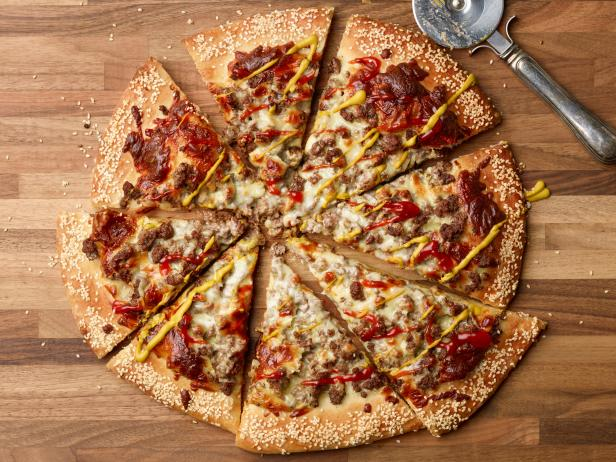

Cheeseburger Pizza

Description
Combine two favorite foods into one, peak efficiency.
Ingredients
- Cooking Spray
- Pre-made pizza dough
- Ground Beef
- Onion
- Cheddar Cheese
Directions
- Preheat the oven to 400 degrees F. Grease baking sheet with
cooking spray. Unroll the pizza dough over the baking sheet.
- Bake this into a preheated oven, for around 8 minutes.
- Cook/stir beef and onion into a skillet until the beef is browned. Approximately 5-7 minutes
- Remove the pizza from the oven. Place the pasta sauce, cheese
and ground beef mixture on the pizza. Then return to the oven until
the crust is golden (~6 - 10 minutes)